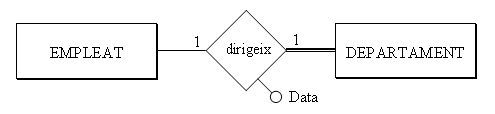
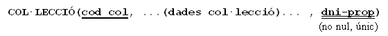
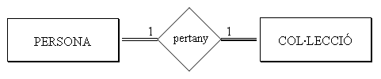
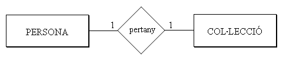
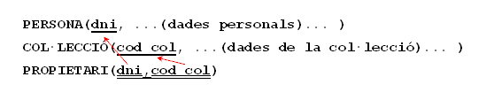

4.4 Relacions 1:1
No hi ha una forma única de traduir aquestes relacions. Tres seran les possibles traduccions, segons la participació total o parcial de les entitats en la relació, i també segons el que ens diga el "sentit comú ".
- Si de les dues entitats que entren la relació, A i B ,* una d'elles i només una, participa de forma total, per exemple *B , traduirem la relació 1:1 com una clau externa en la taula corresponent a l'entitat que participa de forma total (B). Podem obligar també a que aquest camp que serà clau externa siga no nul (ja que totes les ocurrències de B entren en la relació). També podem fer que aquest camp siga únic (no es podrà repetir, ja que si es puguera repetir seria una relació 1:N). A més, inclourem enB tots els possibles atributs de la relació.
Per exemple, la relació dirigeix , que és 1:1 entre EMPLEAT i DEPARTAMENT :

Com que l'entitat de la dreta participa de forma total, triarem DEPARTAMENT :
Ho fem d'aquesta manera perquè tots els departaments tenen director, però no tots els empleats són directors. Si posàrem la clau externa en la taula EMPLEAT(s'anomenaria per exemple dep_que_dirigeix) moltes vegades estaria buit, ja que relativament són pocs els empleats que dirigeixen un departament.
Vegem un altre exemple de relació 1:1, el de les papallones. Teníem una relació 1:1 entre PERSONA iCOL·LECCIÓ
Triaríem COL·LECCIÓ , ja que entra de forma plena o total en la relació.



- Si les dues entitats participen de forma total, es pot considerar tot (les dues entitats i la relació, amb els seus possibles atributs) com una sola taula. En la pràctica això serà prou estrany, perquè ja ho hauríem considerat una sola entitat. Per exemple, considerem que totes les persones que estudiem tenen una col·lecció:

Aleshores podríem considerar una única taula, que continga les dades de la persona i de la seua col·lecció:
De tota manera, pot ser ens interesse (per separar clarament els dos tipus d'informació) dues taules. Aleshores podríem traduir-lo com en el primer punt, amb una clau externa (no nula) en una de les dues taules, i hauríem de triar la taula que menys s'utilitze.

- Si les dues entitats participen de forma parcial, com que si posem una clau externa en una de les dues, moltes vegades tindrà valor nul, podem traduir-la com una nova taula que marque la relació, on hi haurà una tupla per cada relació entre dues ocurrències. Inclouríem en la nova taula els possibles atributs de la relació.
En l'exemple podria ser que les col·leccions pertanyen a una persona particular o a una institució (no tenen propietari):

Quedaria:

Però com comentàvem al principi, haurem d'aplicar el sentit comú, ja que potser una de les dues podria participar de forma "quasi" total (per exemple, quasi totes les col·leccions són d'una persona). Aleshores podria ser millor traduir-lo com en el primer cas, posant la clau externa en la que participa de forma "quasi" total, ja que aquesta tindrà relativament pocs valors nuls, i seria més costós mantenir una altra taula. Evidentment la clau externa sí que podria ser nula, en aquest cas.
Resumint, una relació 1:1 quasi sempre la traduirem com una clau externa en la taula que participa en la relació de forma total o quasi total (o la que previsiblement té més ocurrències en la relació)
Llicenciat sota la Llicència Creative Commons Reconeixement NoComercial CompartirIgual 3.0